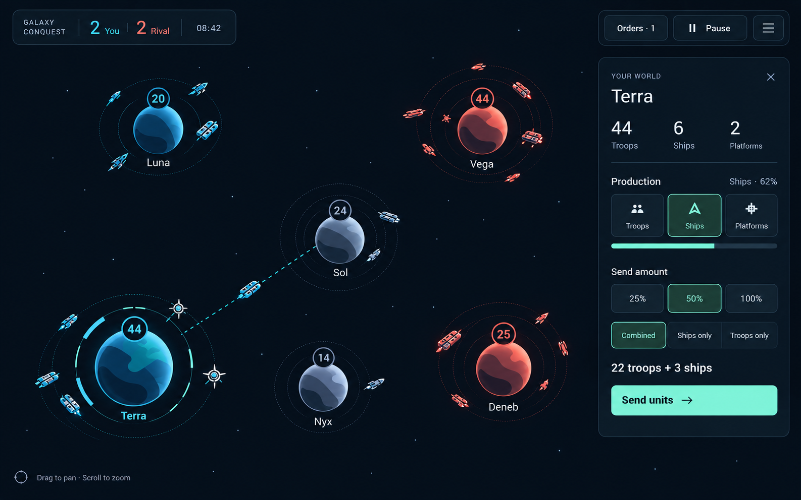
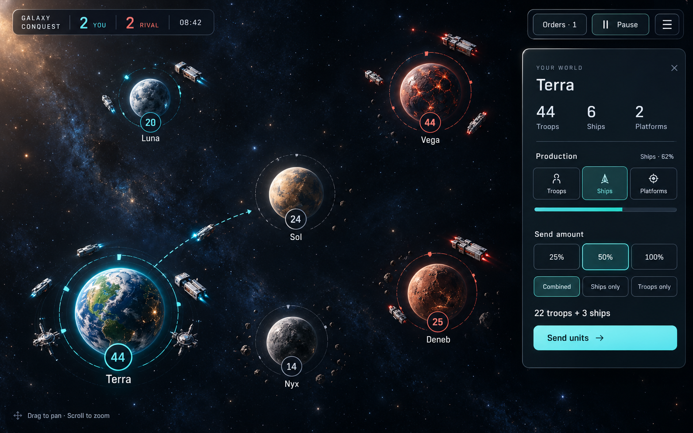
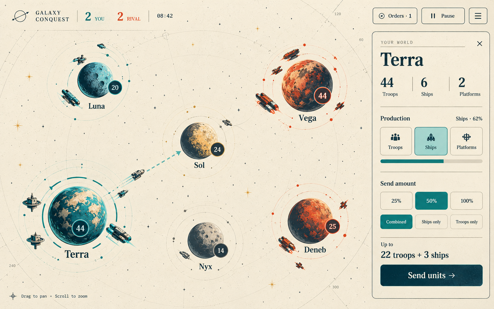

Same battle and controls, three visual directions. Select one to focus, or compare all three.
Refine the current look
Orbital Command

Quiet navy space, graphic planets, precise orbit rings, and distinct ship silhouettes. The current cyan/coral language becomes more deliberate.
Fit, tradeoff & direction notes
Fit: Best for continuity and fast tactical reading. Tradeoff: More restrained; less spectacle than the other directions.
Keep planet surfaces abstract and unit roles readable by silhouette. Concentrate motion in production, dispatch, and combat feedback. This is the most direct evolution of the current rendering approach.
Higher detail planets & ships
Deep Space

Clouds, cratered moons, planetary night sides, hull panels, and mechanical platforms. Fine faction rings and count badges sit above the richer art.
Fit, tradeoff & direction notes
Fit: Best for a tangible science-fiction setting. Tradeoff: More asset work; background detail needs restraint in crowded battles.
Use natural planetary colors with independent faction markers. Warships and transports need distinct silhouettes before adding hull detail. Detailed textures should simplify as the camera zooms out. The decorative asteroid fields in the concept are visual dressing only.
A fresh direction
Stellar Atlas

Warm ivory, petrol ink, teal and vermilion. Illustrated worlds, inked spacecraft, and editorial type turn the battle into an interactive astronomical chart.
Fit, tradeoff & direction notes
Fit: Best for a distinctive visual identity. Tradeoff: The largest change in tone; needs a consistent illustration style.
Pair a serif world title with simple controls and tabular numbers. Keep chart marks faint and reserve strong ink for worlds, units, and active routes. Carry the printed-atlas material into menus and the existing mobile command sheet.